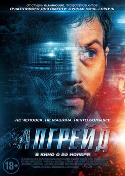
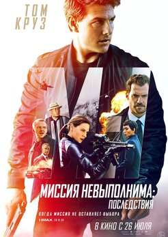
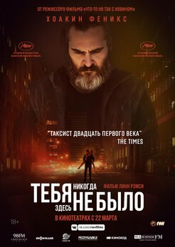

Гусев Денис Сергеевич
Почему выбрали фронтэнд
- Первое
- Второе
- Третье
Ссылка на Ваш любимый сайт
FacebookРасскажите немного о себе:
Люблю кататься на велосипеде и кушать мороженное
Чего ожидаю от курса
Хочу делать крутые сайты и получать от этого удовольствие
Любимые фильмы
-
Народному любимчику Киану Ривзу везёт на франшизы, и «Джон Уик», пожалуй, лучшее, что случалось в его карьере за последние десять лет. Но третья часть боевика о наёмном убийце, получившем статус изгоя и врага преступного синдиката, вышла особенно яростной, динамичной и смешной. Джон Уик всегда был неравнодушен к братьям нашим меньшим. Напомним, что взяться за старое его подтолкнуло несправедливое убийство собаки. Но здесь создатели фильма придумали массу экшен-сцен с участием животных – вот он мчится на коне, а за ним стая мотоциклистов, а вот уже псы ошалело вгрызаются в его противников. В общем, животный мир явно на стороне одинокого киллера.
-

Неожиданно изобретательный боевик, созданный студией Blumhouse. Он снят режиссёром Ли Уоннеллом, чей триллер «Человек-невидимка» недавно прошёл в прокате. Гениальный автомеханик Грей Трейс вместе со своей женой подвергается нападению преступной банды киборгов. Результат этой стычки: его жена - убита, а сам он парализован. При участии одного богатого клиента, чтобы вернуть Грею подвижность, ему ставят экспериментальный имплант Stem. Так герой Логана Маршалла-Грина, который в этом фильме очень похож на Тома Харди, становится машиной для убийства в лучших традициях Робокопа и Терминатора.
-

После каждой серии экшен-франшизы «Миссия невыполнима» следует внушительный список, перечисляющий, каким каскадёрским трюкам научился на съёмках Том Круз. Несмотря на то, что его уже нельзя назвать молодым, он продолжает брать на себя все вызовы своего героя, шпиона Итана Ханта. Месяц изнурительных тренировок, навыки профессионального пилотирования вертолёта и очередная сломанная конечность – вот неполный перечень актёрских подвигов, совершённых Крузом для шестой части киносерии. Его усилия оправдались и многие считают «Последствия» - лучшим, что было в истории «Миссии» со времён первого фильма, снятого в 1996 году Брайаном Де Пальма.
-

Фильм Линн Рэмси наделал шума. Критики окрестили его новым «Таксистом», а в Каннах Хоакину Фениксу выделили приз за лучшую мужскую роль, а заодно наградили и сценарий. Феникс здесь играет, в основном, спиной, его лицо мы видим редко. Он тут – профессиональный киллер, предпочитающий действовать подручными средствами. Готов с легкостью перебить кучу народа хоть одной авторучкой. При этом как таковых сцен насилия в фильме практически нет, все сделано так, чтобы зрителям приходилось домысливать всё самим, и от этого ещё больше бояться. Даже жалко тех преступников, которые решили похитить дочь сенатора. Они не знают, что за ними придёт Джо.